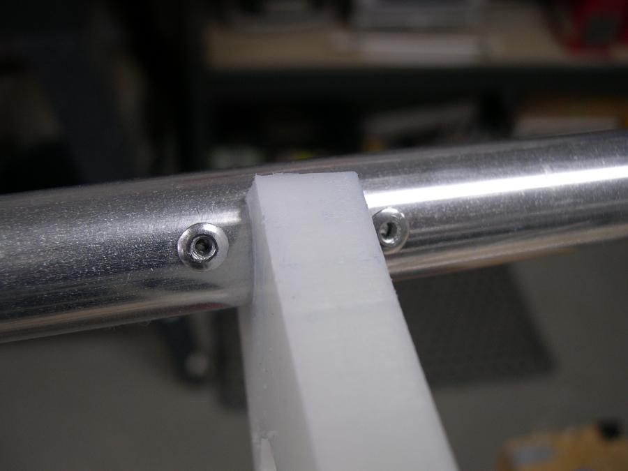

| Cross Section Rivet Stops (1 of 5) | Menu Previous Page Next Page |
|

Cross Section Stops - 1/8" rivets are used to align the cross
sections and to keep them from moving fore or aft during use. Rivets
are placed on the gunwales, deckridge, and keel of each cross
section. Rivets are not placed at the chines. If cross section 3 is
used as the footbrace, 1/4" nylon or aluminum sleeves are used in
conjunction with the rivets to add additional support for the footbrace.
|
|